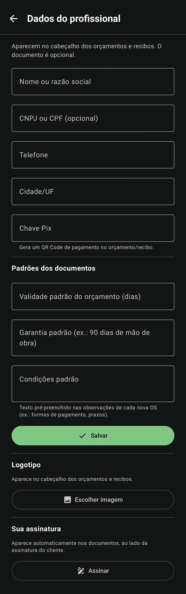
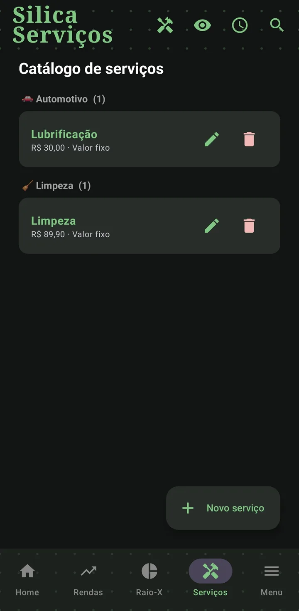
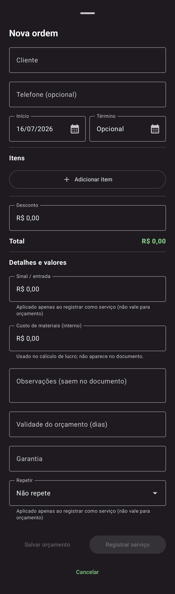

Do orçamento ao recibo assinado
From quote to signed receipt
Feito para quem presta serviço — reparos, manutenção, mão de obra. Catálogo, ordens de serviço, documentos em PDF com QR Pix e a assinatura do cliente na própria tela.
Built for service providers — repairs, maintenance, labor. Catalog, work orders, PDF documents with a Pix QR and the client's signature right on the screen.
Dados do profissional
Provider details
Antes de emitir documentos, preencha sua identidade em Menu › Dados do profissional. Ela vira o cabeçalho dos seus PDFs e é guardada com segurança (entra no backup):
Before issuing documents, fill in your identity in Menu › Provider details. It becomes the header of your PDFs and is stored safely (included in the backup):
- Nome, CPF/CNPJ, telefone e cidade (o documento é opcional; o app só valida se você preencher).
- Name, tax ID, phone and city (the ID is optional; the app only validates it if you fill it in).
- Chave Pix — usada para gerar o QR Pix do documento.
- Pix key — used to generate the document's Pix QR.
- Logo e sua assinatura (desenhada na tela).
- Logo and your signature (drawn on screen).
- Validade padrão do orçamento, garantia padrão e condições padrão — pré-preenchidas em cada nova OS.
- Default validity, default warranty and default terms — pre-filled into every new order.

Catálogo & categorias
Catalog & categories
Monte um catálogo de serviços com nome, preço e unidade (fixo, hora, diária ou m²). O catálogo é organizado por categorias com emoji — Elétrica ⚡, Hidráulica 🚰, Pintura 🎨, Marcenaria 🪚 e mais. O preço do catálogo é só uma sugestão: o valor que vale é o que você confirma na ordem de serviço.
Build a service catalog with name, price and unit (fixed, hour, day or m²). It's organized by emoji categories — Electrical ⚡, Plumbing 🚰, Painting 🎨, Carpentry 🪚 and more. The catalog price is just a suggestion: the binding amount is the one you confirm on the work order.

Ordem de serviço (OS)
Work order
Toque no + para abrir uma OS. Informe o cliente (com autocomplete de clientes anteriores), o período, e adicione itens — do catálogo ou avulsos. Cada OS ganha um número único no padrão AAMMDD-NNNN (ano, mês, dia + sequência do dia), atribuído na criação e imutável.
Tap + to open an order. Enter the client (with autocomplete of previous clients), the period, and add items — from the catalog or custom. Each order gets a unique number in the YYMMDD-NNNN format (year, month, day + daily sequence), assigned on creation and immutable.
O formulário aceita sinal, custo de materiais, observações, validade, garantia e repetição — e se você fechar sem salvar, um rascunho é preservado por 30 segundos.
The form supports down payment, material cost, notes, validity, warranty and repetition — and if you close it without saving, a draft is kept for 30 seconds.

Atende os mesmos clientes com frequência? Use Duplicar numa OS existente: ela vira o modelo de uma nova (cliente, itens e valores copiados), com número, data, sinal e recorrência zerados.
Serve the same clients often? Use Duplicate on an existing order: it becomes the template for a new one (client, items and amounts copied), with number, date, down payment and recurrence reset.
Orçamento → Recibo
Quote → Receipt
Uma OS nasce como Orçamento ou como serviço realizado. O orçamento é uma proposta — não entra nos números financeiros ainda. Quando o cliente aprova, você converte em serviço com um toque e o mesmo número é mantido; ao receber, ele vira Recibo.
An order starts as a Quote or as a completed service. A quote is a proposal — it doesn't enter the financials yet. When the client approves, you convert it into a service with one tap and the same number is kept; once paid, it becomes a Receipt.
Sinal, custo & lucro
Down payment, cost & profit
- Sinal (entrada): registre um valor recebido adiantado, com data. Ele vira renda na data do sinal; o saldo vira renda quando você quita o restante.
- Down payment: record an amount received upfront, with a date. It becomes income on the down-payment date; the balance becomes income when you settle the rest.
- Custo de materiais: um campo interno (não sai no documento) que abate do lucro estimado.
- Material cost: an internal field (never printed) that reduces the estimated profit.
- Forma de pagamento: Pix, dinheiro, cartão ou outro — escolhida ao marcar como recebido.
- Payment method: Pix, cash, card or other — chosen when marking as received.
O app garante que o desconto nunca passa do subtotal e o sinal nunca passa do total — seu saldo a receber nunca fica negativo.
The app makes sure the discount never exceeds the subtotal and the down payment never exceeds the total — your balance due never goes negative.
O documento em PDF
The PDF document
Com um toque, você gera um PDF profissional (A4) do orçamento ou recibo. Ele traz:
With one tap you generate a professional A4 PDF of the quote or receipt. It includes:
Cabeçalho & itens
Header & items
Seu logo, o número da OS, seus dados, o cliente, o período e a tabela de itens com subtotal, desconto e total.
Your logo, the order number, your details, the client, the period and the items table with subtotal, discount and total.
QR Pix
Pix QR
Um QR code Pix com o valor a receber já embutido — o cliente escaneia e paga o valor certo. Aparece quando há saldo e chave Pix cadastrada.
A Pix QR with the amount due already embedded — the client scans and pays the exact value. It appears when there's a balance and a Pix key set.
Validade, garantia & observações
Validity, warranty & notes
Orçamento mostra "válido até"; recibo mostra a garantia. As observações saem impressas.
Quotes show "valid until"; receipts show the warranty. Notes are printed too.
Duas assinaturas
Two signatures
A sua (cadastrada) e a do cliente (colhida na tela), centralizadas sobre a linha, como assinar no papel. Documentos longos são paginados ("Página X de Y").
Yours (registered) and the client's (captured on screen), centered over the line like signing on paper. Long documents are paginated ("Page X of Y").
Você compartilha o PDF direto pelo WhatsApp, ou envia uma versão em texto formatado (com o Pix copia-e-cola incluído).
You share the PDF straight to WhatsApp, or send a formatted text version (with the copy-and-paste Pix code included).
Assinatura do cliente na tela
Client signature on screen
Na hora, o cliente assina com o dedo na tela do celular e a rubrica entra no recibo, com data e hora do aceite. Se você editar a OS depois, a assinatura anterior é invalidada — para o documento sempre refletir o que foi de fato aceito.
On the spot, the client signs with a finger on the phone screen and the signature goes into the receipt, with the date and time of acceptance. If you edit the order later, the previous signature is invalidated — so the document always reflects what was actually agreed.
Serviços que se repetem
Recurring services
Faz manutenção mensal, quinzenal ou semanal? Marque a OS como recorrente. Quando a ocorrência atual é paga (ou vence), o Silica gera a próxima automaticamente — com um novo número, copiando os itens, mas sem arrastar sinal, pagamento ou assinatura. Você pode encerrar a repetição a qualquer momento, sem tocar no histórico já feito.
Do monthly, biweekly or weekly maintenance? Mark the order as recurring. When the current occurrence is paid (or comes due), Silica creates the next one automatically — with a new number, copying the items but carrying no down payment, payment or signature. You can end the repeat anytime, without touching the history already done.
Raio-X & Sentinela do Serviços
Services X-Ray & Sentinel
O Raio-X do Serviços mostra o recebido no mês, o a receber, o lucro estimado e o ticket médio, além de faturamento por categoria, mix de formas de pagamento, taxa de conversão de orçamento em serviço e os principais clientes.
The Services X-Ray shows the month's received, the amount to receive, estimated profit and average ticket, plus revenue by category, payment-method mix, the quote-to-service conversion rate and top clients.
A Sentinela avisa sobre ordens a receber e sobre orçamentos prestes a vencer (validade), para você fechar a venda a tempo.
The Sentinel warns about orders to receive and about quotes about to expire, so you can close the deal in time.
O recibo é uma nota fiscal?
Is the receipt a tax invoice?
Não. O recibo e o orçamento do Silica Serviços são documentos de controle entre você e o cliente — por isso são sempre chamados de "Recibo" ou "Orçamento", nunca de "nota fiscal". A nota fiscal de serviço (NFS-e) só é emitida pelo sistema da sua prefeitura ou pelo sistema nacional. A assinatura do cliente na tela é um aceite visual do combinado, não uma assinatura digital com valor jurídico.
No. Silica Services receipts and quotes are control documents between you and the client — that's why they're always called "Receipt" or "Quote", never "tax invoice". A service tax invoice is issued only by your city or national e-invoice system. The client's on-screen signature is a visual acceptance of the agreement, not a legally-binding digital signature.